Niles High School
{kind=link}
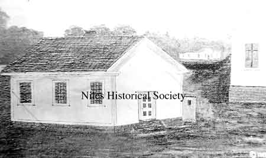
President William McKinley's first grade teacher, Miss Sanford, is seen riding in this carriage during a parade on North Main Street and Park Avenue.
{kind=link}
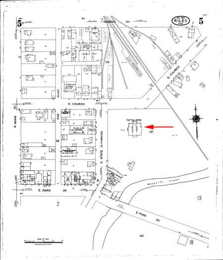
Location of Central High School on 1924 map.
{kind=link}
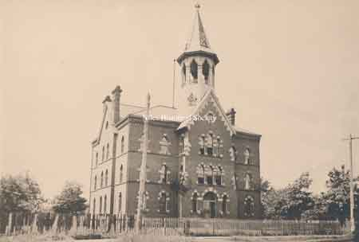
Front view of Central School showing brickwork.
{kind=link}
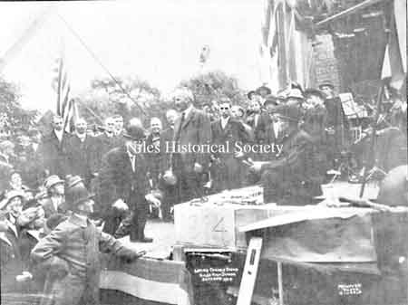
The cornerstone is being laid
{kind=link}
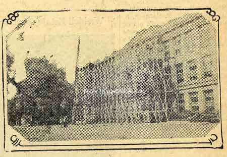
Scaffolding at Niles High School.
{kind=link}
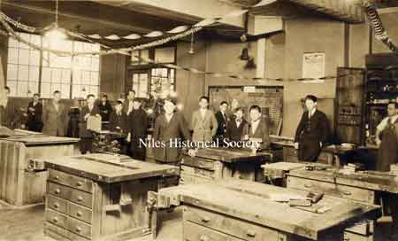
The industrial arts room on the second floor of the Annex.
{kind=link}
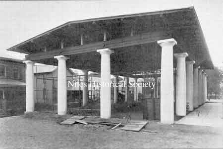
Outdoor playground which later became the enclosed Annex
{kind=link}
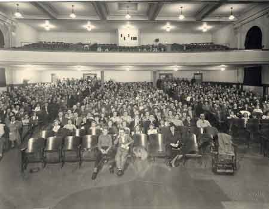
People gathered for a program inside of Edison Jr. High auditorium.

Cheerleaders posing in front of Riverside Stadium, ca 1948.
{kind=link}
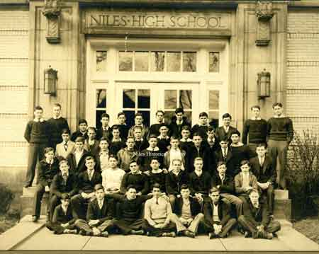
group of male students in front of main high school entrance.
{kind=link}
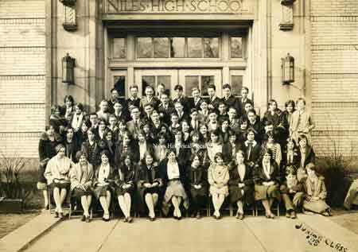
The Junior class of 1928 taken in front
{kind=link}
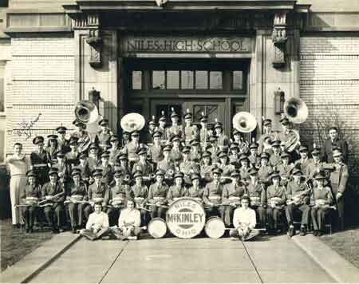
Niles School band 1941 all in uniform. Ruth Fisher, first front row; Mary Whitney, last front row. James Bill Holmes, marked on second row.

The football stadium was built as a WPA project in 1934.
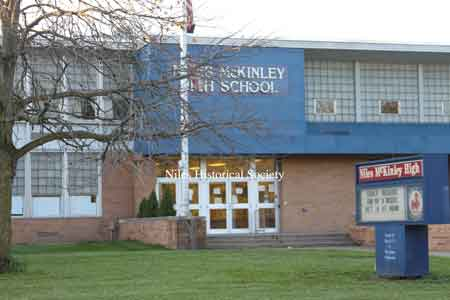